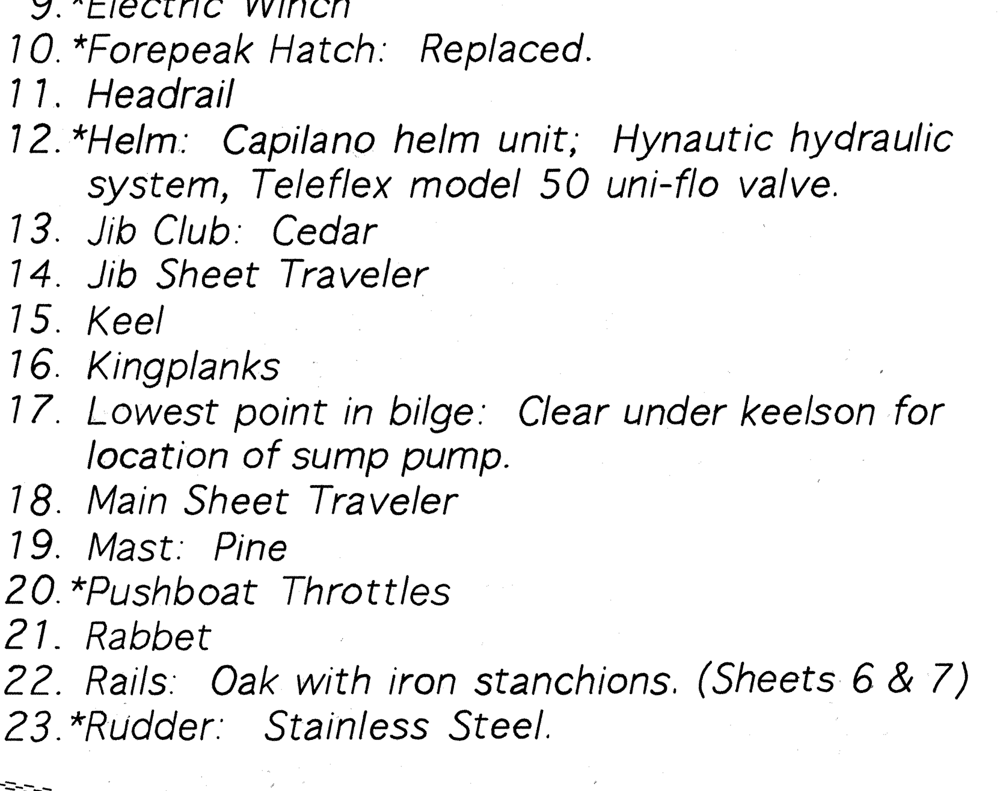

Original scan pixels: [10854, 3863, 13517, 5970]; source SHA-256: 26613443160fe74ec23712f68d934a4e5e39086e7aed33f81e43dee582ec8fd4.
Native lossless view · Raw OCR · Word coordinates/confidence · Manifest

J. CICCLHiC VVIFICTTI 10.*Forepeak Hatch: Replaced. 17. Headrail 12.*Helm: Capilano helm unit; Hynautic hydraulic system, Teleflex model 50 uni-flo valve. 13. Jib Club: Cedar | 14. Jib Sheet Traveler 15. Keel | 16. Kingplanks . 17. Lowest point in bilge: Clear under keelson for location of sump pump. 18. Main Sheet Traveler | 19. Mast: Pine 20.*Pushboat Throttles 21. Rabbet : 22. Rails: Oak with iron stanchions. (Sheets 6 & 7) 23.*Rudder: Stainless Steel.